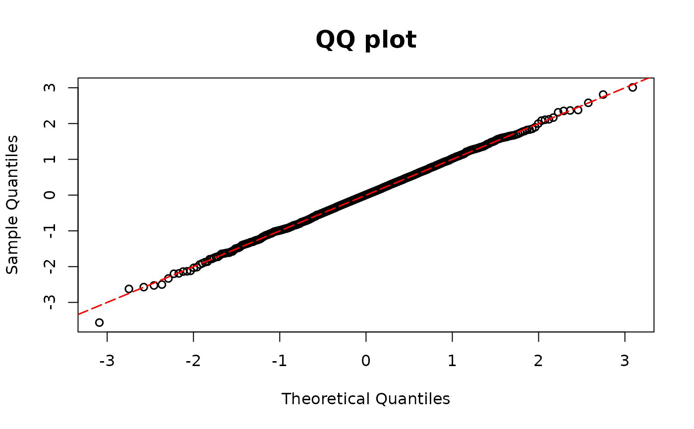

Computes DPIT residuals for regression models with ordinal outcomes
using observed outcomes (y), ordinal outcome levels (level) and their fitted category
probabilities (fitprob).
Arguments
- y
An observed ordinal outcome vector.
- level
The response levels in their ordinal order. For instance,
c(0, 1, 2)orc("low", "medium", "high").- fitprob
A matrix of fitted category probabilities. Each row corresponds to an observation, and the columns must follow the order in
level. Each row must sum to one.
Details
For formulation details on discrete outcomes, see dpit.
Examples
## Ordinal example
library(MASS)
n <- 500
x1 <- rnorm(n, mean = 2)
beta1 <- 3
# True model
p0 <- plogis(1, location = beta1 * x1)
p1 <- plogis(4, location = beta1 * x1) - p0
p2 <- 1 - p0 - p1
genemult <- function(p) {
rmultinom(1, size = 1, prob = c(p[1], p[2], p[3]))
}
test <- apply(cbind(p0, p1, p2), 1, genemult)
y1 <- rep(0, n)
y1[which(test[1, ] == 1)] <- 0
y1[which(test[2, ] == 1)] <- 1
y1[which(test[3, ] == 1)] <- 2
multimodel <- polr(as.factor(y1) ~ x1, method = "logistic")
y1 <- multimodel$model[,1]
lev1 <- multimodel$lev
fitprob1 <- fitted(multimodel)
dpit.ord <- dpit_ordi(y=y1, level=lev1, fitprob=fitprob1)
resid.ord <- residuals(dpit.ord)
plot(dpit.ord)
